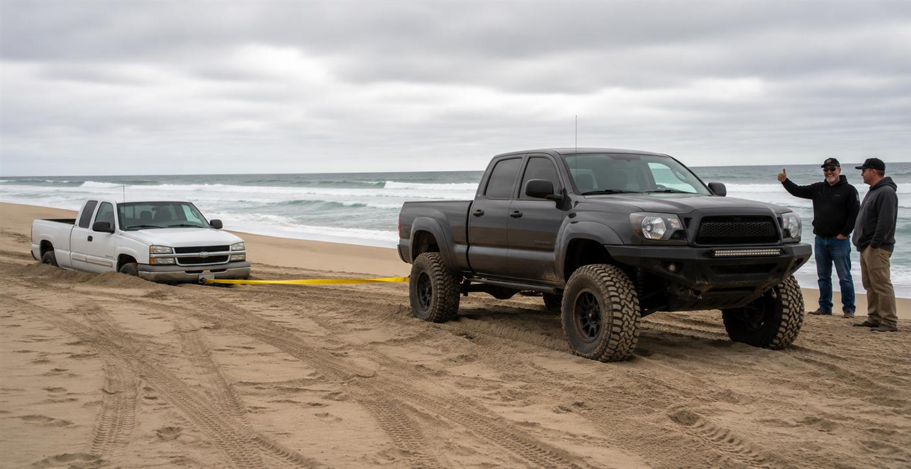

Tips & Tricks
Decades of dune experience, condensed. Read this before your first trip in. It's cheaper than learning it the hard way.
Ride Smart
- Take a safety course. Formal ATV training under a certified instructor is recommended for everyone and mandatory for riders under 18.
- Gear up. Every ATV rider must wear a helmet and should wear proper protective clothing.
- Learn the terrain first. Know the telltale signs of a slipface before you need to. Avoid surprises.
- Be cautious heading east. Slipfaces normally face east; the steep drop is on the side you can't see coming.
- Know your controls cold before you open it up, and ride within your limits. When in doubt, stop and look it over.
- Ride with a buddy. Going off into the dunes alone is not recommended.
Four Wheels in the Dunes
- Focus on the short-term horizons. Drive in arcing right-hand turns to come parallel with them so you can see into the slipfaces. Some drop 100 feet straight down.
- Never drive straight up to a horizon. You can't see the conditions ahead, and stopping on an uphill (or hoping for the best) is how bad days start.
- Buggies: use angles. Trucks can usually take a dune slow and straight-on, but a lighter buggy will high-center and sink to the frame. Enter and exit dunes on a slight angle.
- Exit at an angle too so you don't high-center going up and out.
- Never brake or fully lift off the throttle while climbing a dune.
- Bring a tow rope. Most dune rescues take two.

If You Get Stuck
Air down. Drop tire pressure, but not below 15 PSI.
Dig out the sand from around your tires.
Push straight. Recruit friends, keep the front wheels straight, and drive gently forward or backward. Never spin the wheels; that only digs you deeper.
Call for a tow if all else fails; beach towing is available.
Swimming & Riptides
Dangerous currents called riptides form from the combination of wave action and the shape of the shoreline.
- Caught in a rip? Don't fight it. Never swim against the current.
- Swim parallel to the shore until you're out of the rip, then make your way in.
- Lifeguards are on duty at Oceano Dunes SVRA from June through Labor Day.

Dune Conditions Are Always Changing
The park posts exactly one warning in big letters: be prepared for sudden drop-offs. The wind rebuilds the dunes constantly, so the clean crest you launched last month may be a 30-foot slipface today.
- Crest slow the first time, every time — even on lines you know.
- Ride with a buddy and always expect to meet someone on a blind crest or curve.
- Carry a small tool kit: spark plugs, first aid, and drinking water. Take breaks — fatigue is when people get hurt.
- Gasoline is for engines only. Not for starting campfires, not for cleaning parts.
Build Your Trip Plan in 60 Seconds
Tide-timed arrival windows for your exact dates, a personalized gear checklist, and the local tricks that keep you off the tow strap.
Plan Your Trip